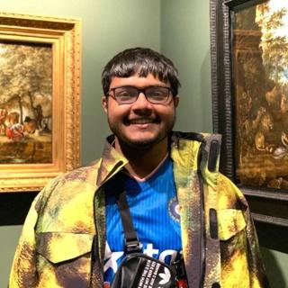
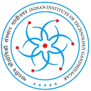

Soumya Snigdha Kundu(Shou-mo Snigh-dho Kun-du)
3rd
Year Ph.D. working on Deep Learning at
 KCL
advised by
Tom Vercauteren
and
Jonathan Shapey. I am funded by the
Medical
Research Council.
KCL
advised by
Tom Vercauteren
and
Jonathan Shapey. I am funded by the
Medical
Research Council.
Recently, I've collaborated with
Reuben Dorent
at Inria
and
Florian Kofler
at
Tübingen. Previously, I've worked with
Bartek Papiez
at
 Oxford,
Patrick de Perio
and
Akira Konaka
at
TRIUMF-Canada and
Tarun Gangwar
at
Oxford,
Patrick de Perio
and
Akira Konaka
at
TRIUMF-Canada and
Tarun Gangwar
at

IIT-GN.
I love software. I've interned with
Cosine (YC 23)
and did
 GSoC'26 with the
Neuroinformatics Unit.
GSoC'26 with the
Neuroinformatics Unit.
My MSc was with Greg Slabaugh and Vineet Batta at QMUL. Did my UG with Dhanalakshmi Samiappan and Debashis Nandi (NIT-D) at SRM.
I am always exploring London's food scene or breaking down complex rhyme schemes in rap. In school, I represented my country in futsal and debated nationally.
I regularly mentor students (see In2Stem!) and researchers. Please reach out!
Many have supported my research. In no particular order, everyone at CAI4CAI: Lorena Macias, Meng Wei, Theo Barfoot, Aaron Kujawa, Marina Ivory, Navodini Wijethilake, Oluwatosin Alabi and Martin Huber. Along with: Pooja Ganesh (SEL), Treasa Jiang (KCL), Florian Kofler (TUM), Rakshit Naidu (GaTech), Aarsh Chaube (Edinburgh), Mona Furukawa (Oxford), Yang Li (KCL), and Ruoyang Liu (KCL).
My PhD is on segmentation at all granularities, applied to Neuro-Oncology.
One can think of this as my database for Human RAG during conversations with Tom, as a means to match his infinite test-time knowledge base.